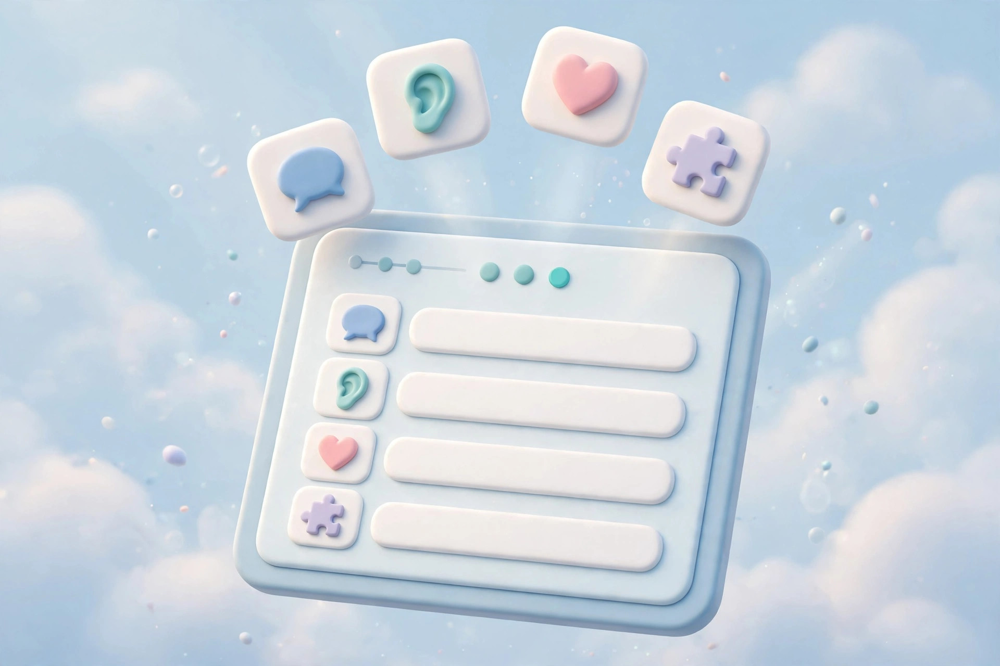
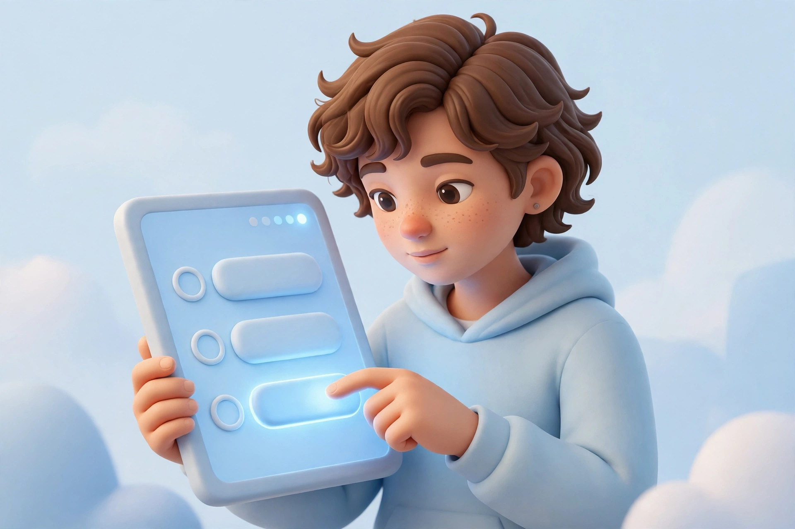
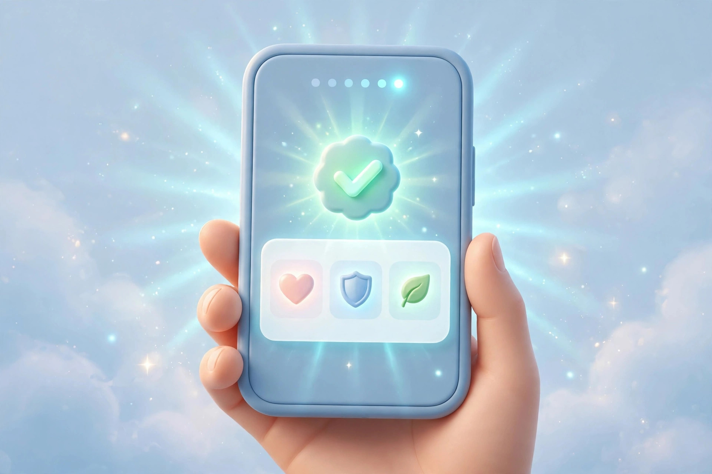

Where every mind maps
the world differently
the world differently
From deep roots,
understanding grows
understanding grows
Foundation designed
for inclusion
for inclusion
Celebrating every
difference
difference
Every Mind Is Different. Every Mind Matters.
Explore MindCursor
Awareness
Acceptance
Inclusion
Awareness
Acceptance
Inclusion
Awareness
Acceptance
— Rama Krishna is the creator of MindCursor, a project developed with an interest in technology, artificial intelligence, and its potential to make a positive impact.
Through MindCursor, he aims to bring technology and autism awareness together, encouraging greater understanding and acceptance of neurodiversity.

UNDERSTANDING DIFFERENCES
Every Mind Experiences the World Differently.
OUR PURPOSE
Beyond Differences.Towards Understanding.
Purpose
Scroll to explore
BEHIND THE INTELLIGENCE
Where ArtificialIntelligence Meets Awareness.
Step 1 — Register
Create your free MindCursor account.
Step 2 — Select age group
Pick your group: 12–18, 18–30, or 30+.

Step 3 — Get your questions
A set of simple questions appears.

Step 4 — Answer them
Answer each one honestly.
Step 5 — System predicts
My ML model analyzes your answers.

Step 6 — See your result
Get your clear prediction instantly.